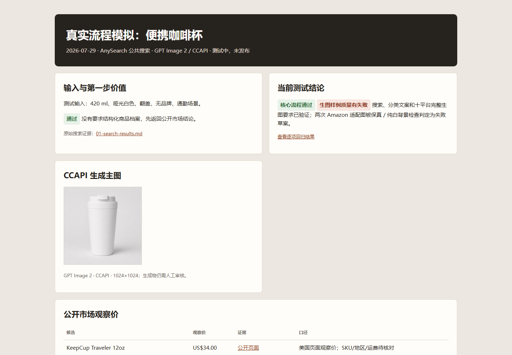

它是什么
先做研究，再按已选平台适配。
它会把用户提供事实、图片可见信息、公开市场观察和待确认事项分开。第一步只交付包含公开同类链接与页面观察价格语境的一页结论；平台文案、图片规格和可选生图 brief 会在选定平台之后再产生。
工作流
每一步都有可见的复核点
- 提供一个输入商品描述、公开商品链接或产品图片任一即可。
- 复核公开证据查看同类链接、来源状态、页面观察价格、卖点和痛点。
- 选择目标平台确定平台后，才生成对应文案或图片规格。
- 核对事实与宣称缺失规格不进入面向买家的文案，而是回到待复核清单。
- 交付可编辑草案把证据账本、文案包和图片 brief 作为可编辑的上架准备交接物。

支持范围
面向公开市场研究与可追溯的上架准备
- 公开搜索证据和选定页面的 Markdown 处理
- 淘宝/天猫、京东、拼多多、抖音、快手、Amazon、eBay、Etsy、Shopify、AliExpress 的平台适配
- 基于指定公开资料整理的十个平台完整图片规格矩阵
- 交付前的事实、类目、宣称和平台字段复核
可复核交付
随草案一起交付的证据
- 每份研究结论附带来源链接、页面观察事实和待复核事项。
- 平台字段、文案包、图片规格和可选图片 brief 按编辑与交接场景整理。
- 事实、类目、宣称和平台字段复核让每份草案更易于使用前检查。